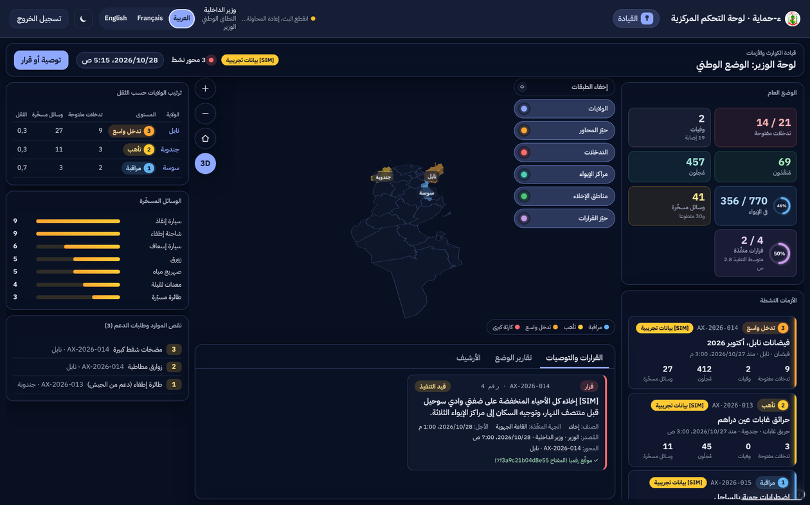
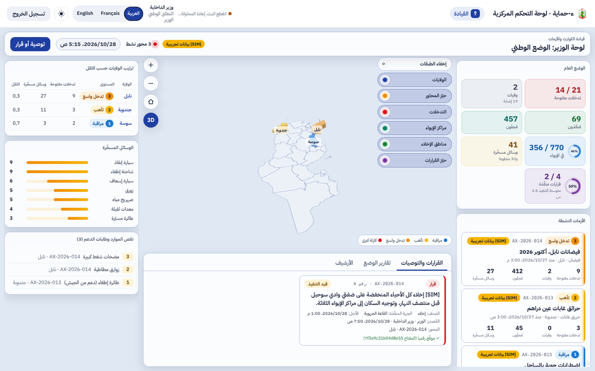
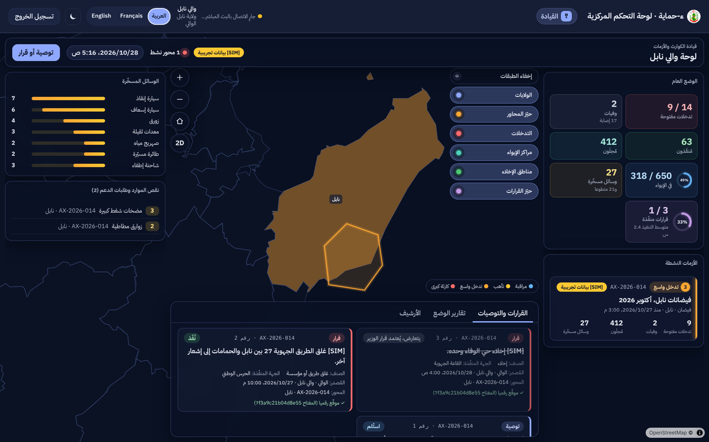
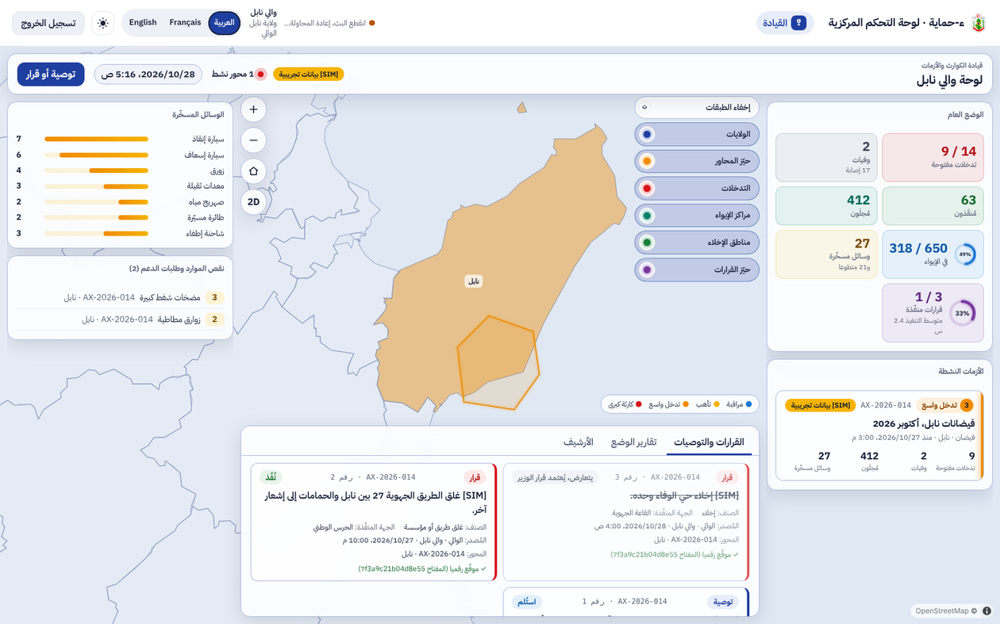
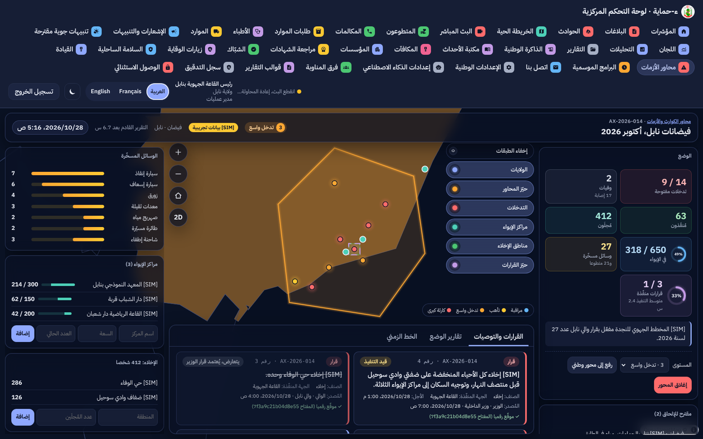
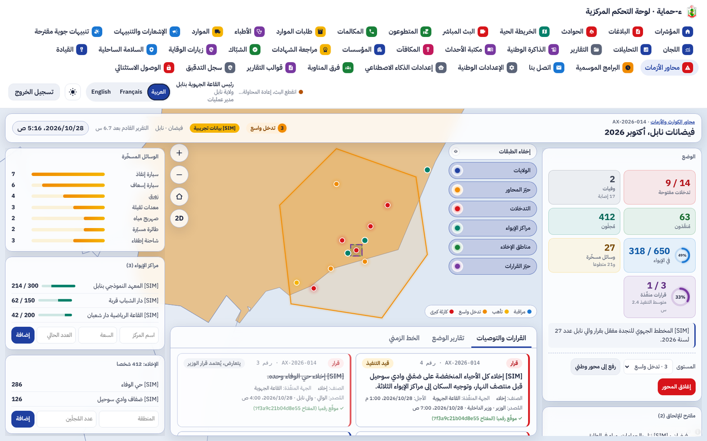

ء-حماية e-Himaya
تقرير المرحلة L3: محور الكارثة والأزمة، والقرارات الموقّعة، وواجهات القيادة للوزير والوالي والقيادة الميدانية (البند 13)
1. أين تقع هذه المرحلة من مسار المشروع
التبليغ
←
المعالجة
←
التحليل
←
مؤشرات الأداء KPI
←
التنبؤ بالذكاء الاصطناعي
←
اتخاذ القرار
- المعالجة: تُجمع تدخلات الحدث الكبير الواحد في محور واحد، بحيّزه ومستواه ومراكز إيوائه ومناطق إخلائه ونقص موارده.
- التحليل والمؤشرات: أرقام المحور محسوبة لا مُدخلة (التدخلات، الوفيات والإصابات، المُنقَذون، المُجلَون، الإيواء، الموارد المسخّرة، القرارات المنفّذة ومتوسط زمن التنفيذ)، وترتيب الولايات حسب الثقل.
- اتخاذ القرار: الوالي والوزير يصدران توصية أو قرارا موقّعا رقميا، تنفّذه القاعة وتحدّث حالته؛ وتقرير الوضع يُعدّ آليا بتواتر المستوى.
2. مراجعة ← تصميم ← تطوير
الطلب: البند 13 من حزمة الترحيل: «محور» للكارثة أو الأزمة المعلنة، ودوران جديدان (الوالي والوزير) لا يريان إلا المحاور المعلنة، وواجهات قيادة. ثم طلب المالك (28 أكتوبر) حرفية لوحات القيادة الجغرافية الحديثة بوضعين ليلي ونهاري.
الأمن والمعطيات الشخصية: الوالي لا يرى الطبقات الحساسة أبدا ولو أثناء محور مفتوح؛ الوالي والوزير لا يريان أي مبلّغ أو رقم هاتف أو هوية ضحية، ولا أي تدخل غير ملحق بمحور. يفرض ذلك الخادم بالدور، وقاعدة البيانات بولايات المحور (RLS).
- المحور: رقم تسلسلي (
AX-2026-014)، اسم ونوع، ولائي أو وطني بفروع، حيّز مضلّع، مستوى من 1 (مراقبة) إلى 4 (كارثة كبرى)، المخطط المفعّل، مفتوح ثم مغلق بحصيلة.
- الدورة: رئيس القاعة الجهوية يطلب الإعلان معلّلا؛ القائد (رئيس القاعة المركزية) يقبل فيُفتح المحور ويُشعَر الوالي والوزير، أو يرفض بسبب؛ يصعّد المحور الولائي إلى وطني دون فقدان أي معطى؛ ويغلقه بحصيلة محسوبة ومسودة في الذاكرة الوطنية.
- الإلحاق: المنظومة تقترح التدخلات المفتوحة داخل الحيّز ومن صنف متوافق؛ لا إلحاق آلي؛ الفصل بسبب.
- التوصية والقرار: صنف وأجل وجهة منفّذة وحيّز اختياري؛ توقيع Ed25519 من الخادم بمعرّف المفتاح، لا يُعدَّل ولا يُحذف؛ الحالة من «صدر» إلى «نُفّذ» أو «تعذّر» بسبب؛ قرار الوزير يُعتمد عند التعارض مع قرار للوالي من الصنف نفسه لم يُنفّذ.
- العامل: كل دقيقة؛ مسودة تقرير الوضع كل 24 أو 12 أو 6 أو ساعتين حسب المستوى (إعداد وطني)، تذكير قبل الأجل بساعة وتنبيه للمُصدر عند فواته.
- الواجهات:
/axes للقاعات، /axes/:id للقيادة الميدانية، و/command للوالي والوزير؛ طابع غرفة العمليات: خريطة تملأ الشاشة، لوحات زجاجية، طبقات تُطوى، أزرار دائرية، عرض ثنائي أو ثلاثي الأبعاد ترتفع فيه الولايات بمستواها؛ وضع ليلي ونهاري يتبع الجهاز ويُحفظ اختيار المستخدم.
3. لقطات [SIM]
لوحة الوزير: الوضع الوطني، ترتيب الولايات حسب الثقل، الموارد المسخّرة، النقص وطلبات الدعم، الأزمات النشطة، وقرار موقّع. الوضع الليلي ثم النهاري:


لوحة والي نابل: ولايته فقط، والقرار الذي يعارضه قرار الوزير مشطوب:


القيادة الميدانية لمحور فيضانات نابل: الحيّز والتدخلات والإيواء والإخلاء، المستوى والتصعيد والإغلاق، القرارات:


قائمة المحاور وطلب الإعلان بانتظار القائد:
4. التقدم لكل جزء
| البند | الحالة | التقدم |
|---|
| F-DSH-58 قائمة المحاور وطلبات الإعلان | منجز (L3) |
|
| F-DSH-59 القيادة الميدانية للمحور | منجز (L3) |
|
| F-DSH-60 لوحة الوالي | منجز (L3) |
|
| F-DSH-61 لوحة الوزير | منجز (L3) |
|
| F-DSH-62 طابع غرفة العمليات بوضعين | منجز (L3) |
|
| F-SRV-18 المحاور ودورتها وأرقامها و RLS | منجز (L3) |
|
| F-SRV-19 القرارات الموقّعة والعامل والإشعارات | منجز (L3) |
|
| الطلب المسبَّب للاطلاع على الهويات | مؤجل (X1) |
|
| إشعار الهاتف والمكالمة الآلية للمستوى 4 | L4 (X2) |
|
| التضاريس والمباني ثلاثية الأبعاد | مؤجل (X5) |
|
تقدم L3: 100%. مراحل الخريطة والقرار (L1a إلى L5): المرحلة الرابعة من ست.
5. المحاكاة [SIM]
- [SIM] المحاور الثلاثة في اللقطات والاختبارات مختلَقة: فيضانات نابل (المستوى 3)، حرائق غابات عين دراهم (2)، اضطرابات جوية بالساحل (1)، وطلب إعلان من سوسة. كلها تحمل الشارة الكهرمانية.
- اللقطات بواجهة برمجية محاكاة؛ حدود الولايات حقيقية من قاعدة البيانات.
- خلفية الخريطة (OpenStreetMap) لا تظهر في بيئة اللقطات دون إنترنت؛ تظهر حدود الولايات وحدها، وفي التشغيل الفعلي تظهر الخريطة تحتها (معتمة في الوضع الليلي).
6. الاختبارات المطبقة
| المكوّن | العدد | النتيجة |
|---|
| الخلفية (pytest) | 931، منها test_crisis.py | كلها ناجحة (2 متخطّاة كالعادة) |
| الترحيلات | صعودا ونزولا ثم صعودا حتى 0056 | ناجحة |
| لوحة القيادة (vitest) | 505، منها Crisis.test.tsx (8) | كلها ناجحة |
| لوحة القيادة (Playwright مع axe) | 48، منها /command و /axes و /axes/:id بالعربية والفرنسية | كلها ناجحة |
ruff و mypy و eslint و tsc | — | لا ملاحظة |
- الصلاحيات: الوالي والوزير لا يقرآن البلاغات ولا التدخلات غير الملحقة؛ والي نابل لا يقرأ محاور سوسة (RLS)؛ لا هوية مبلّغ أو ضحية في ما يُرسل إليهما.
- الدورة: الطلب والقبول والرفض، الفتح للقائد وحده، الإلحاق والفصل والرفض، التصعيد بفروع، الإغلاق بحصيلة ومسودة ذاكرة.
- القرارات: التوقيع والتحقق منه، الحالات المسموح بها، التعارض واعتماد قرار الوزير، التذكير والتنبيه عند فوات الأجل.
- العامل: مسودة تقرير الوضع في موعدها حسب المستوى، والأرقام المحسوبة.
- الإتاحة: لا مخالفة جدية أو حرجة لـ WCAG 2.2 AA (منطقة القرارات القابلة للتمرير صارت قابلة للوصول بلوحة المفاتيح).
8. المخرجات المحيَّنة
- الملف الوصفي V19 (docx و pdf) في
spec/: F-DSH-58 إلى 62 و F-SRV-18 و 19 منجزة، الدوران الجديدان، القاعدة BR-07b، 416 مسارا و497 عملية، الاختبارات، و L3 في خارطة الطريق.
- مخططات UML في
diagrams/: تسلسل «محور الكارثة» (56)، تسلسل «القرار الموقّع والتعارض والأجل» (57)، حالات المحور والطلب والقرار (58)، أصناف المحور في مخطط العمليات، وحالات الاستعمال S30 إلى S37 مع القائد والوالي والوزير.
- العرض للمسؤولين في
presentation/: 34 مرحلة، الاختبارات، وخارطة الطريق.
- مرجع التصميم مُعاد توليده دون تغيير (لا لون ولا أيقونة جديدة): design-reference.html.
- سجل الإصدارات، القائمة المؤجلة (§3.3)، ودليلا التنصيب (الترحيل 0056 والدوران)، واللقطات في
l3/.
9. ملاحظات وانحرافات
- اللجنتان المحلية والمركزية بقيتا بصلاحياتهما؛ الوالي والوزير دوران جديدان منفصلان حتى لا ينكسر ما بُني في المرحلتين 5 و9.
- الخريطة ثلاثية الأبعاد كانت مؤجّلة في التصميم؛ بُني منها ارتفاع الولايات بالمستوى فقط بطلب المرجع البصري، وبقيت التضاريس مؤجّلة.
- الإشعار حيّ داخل اللوحة فقط: لا تطبيق هاتف للوالي والوزير بعد.
10. ما يلي
دمج #111 (L2)، ثم رفع L3 في طلب دمج جديد. بعدها L4 (نافذة أصحاب القرار، البند 11، وروزنامة مكتبة الأحداث، البند 6) ثم L5.